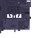
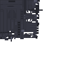
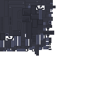
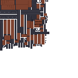
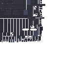
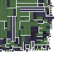
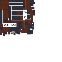

Custom Drugs
Drugs are part of the core economy. Grow, move, and sell product through dealers while balancing profit against police heat.
Server Features
UnderBlockMC mixes economy, PvP, territory, and police pressure into one progression loop.
Drugs are part of the core economy. Grow, move, and sell product through dealers while balancing profit against police heat.
Use custom firearms in gang fights, player ambushes, district pushes, and bounty hunting.
Pistols, SMGs, rifles, and sniper-style weapons give every fight a different pace and style.
Gangsters populate the city, defend territory, and escalate when provoked. Districts become contested hotspots.
Players can place money on enemies. Take them out, claim their head, and redeem the reward.
Crimes raise heat. Police respond harder as you escalate. Break line of sight and stay hidden long enough to lose them.
Fight for sections of the city to gain strategic bonuses, control local markets, and expand your gang’s influence.
Move money between your wallet and bank, but high-risk areas can turn an ATM trip into an ambush.
Player housing and long-term money sinks add persistence and status beyond simple PvP wins.
Weapon Wall






